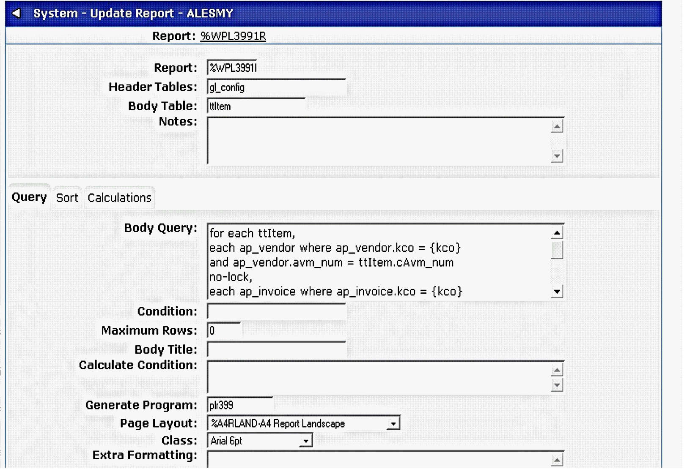
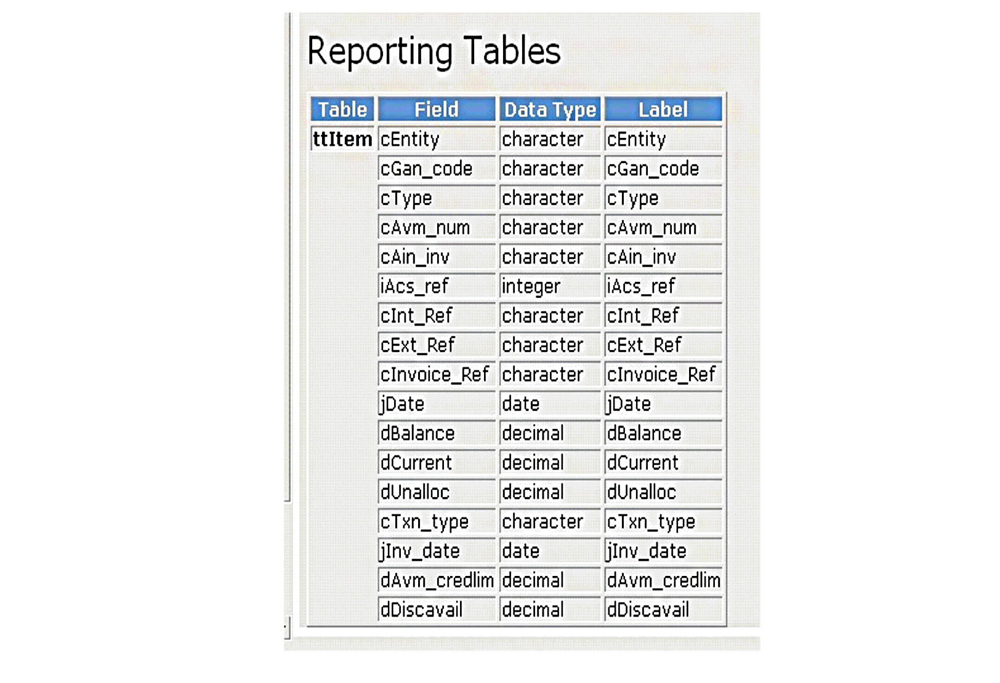

Object
The Object allows you to view the internal methods and reporting temporary tables (where present) for an object. For example where may have written a standard report based upon a Generate Program such as the Open Item Report %WPL3991R ? which queries a temporary table (ttItem) generated by program plr399.

To on the object enter plr399 and select run (it is not necessary to include standard methods). At the bottom of the results the Object will return information on all of the reporting tables available within the generate program:
